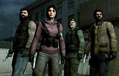

Friday, February 2 2007
 A couple of weeks ago here at Valve we hosted Charles Onyett from IGN for a hands-on preview of Turtlerock's upcoming co-op game Left 4 Dead. This is the first time we've had someone outside of either Turtlerock or Valve play the game and talk about it publicly, so if you want to see what his first impression was of what he played, head over to his write-up.
 The original FlatOut has been released on Steam. For one week, you can pick it up for $4.95 (50% off the release price of $9.95). If you can't get enough high-speed property destruction, you can also pick it up in a package with FlatOut 2 for $24.95, which has an additional 10% discount this week as well.
The original FlatOut has been released on Steam. For one week, you can pick it up for $4.95 (50% off the release price of $9.95). If you can't get enough high-speed property destruction, you can also pick it up in a package with FlatOut 2 for $24.95, which has an additional 10% discount this week as well.